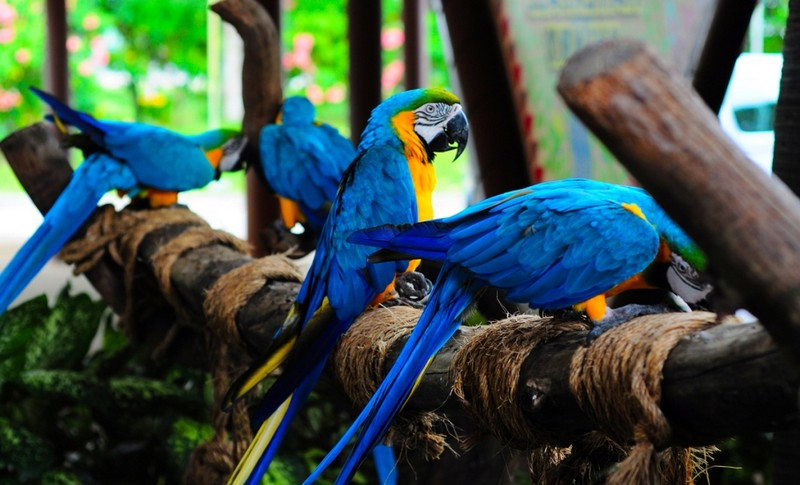

The Bird Park
Welcome to the first Bird Park in Sri Lanka, home to a breathtakingly splendid collection of feathered friends from regions around the world such as the Amazon rain forest in South America, Tropical Asia, Australia and Africa.
Our vivid scope of winged animals on open presentation incorporates the biggest species accumulation of fascinating parrots in the nation. Visit us to associate with probably the most smart, bright, uncommon and eminently multi-toned individuals from the parrot family. The Bird Park is likewise the main open office in Sri Lanka where you can encounter the enchantment of the rainforest "Lories".
.jpg)
The uncommon and outlandish types of feathered creatures displayed at Bird Park incorporates 7 types of macaws, 13 types of oriels, 15 types of conure and 8 types of cockatoo. Our accumulation of feathered creatures are housed in roomy walled in areas planned with the target of reproducing a situation that intently looks like the regular living space, in this way, the Bird Park is the one office in Sri Lanka where you will appreciate the extraordinary experience of watching the quality of the winged wonders of nature in their actual component and full magnificence.

This is a good place near the city, which is easily accessible to spot some wild life and to take a relaxing stroll. The best time of the year to visit is December and January when the migrating birds also rest here. The best timings are the mornings and the evenings. at the wildlife office to arrange a guided tour to the sanctuary.